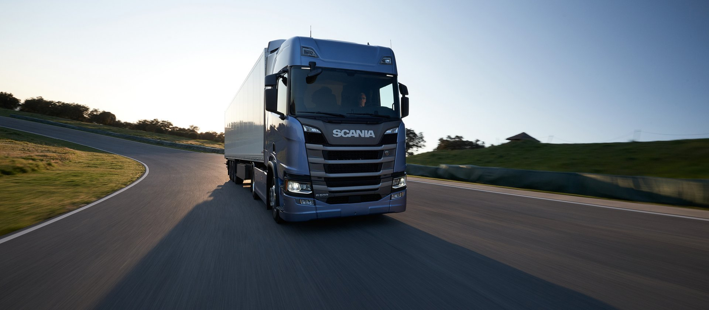

Scania Generáció
A Scania a világ vezető busz, tehergépkocsi, valamint tengeri és ipari motorokat gyártó cégeinek egyike. Európai és latin-amerikai gyártóegységekkel és 32 000 munkavállalóval területének egyik legjövedelmezőbb cége.
|
Az 1891-ben alapított svéd Scania ma már több mint 100 országban tevékenykedik, és körülbelül 46 000 főt foglalkoztat. A kutatás és fejlesztés központja Svédországban található. Ma a Volkswagen-csoporthoz tartozik. A név eredetileg egy bicikligyártó céget jelölt (ez volt a mai társaság elődje), de 1911-ben csődbe mentek, ekkor alakult meg a ma is létező, kamionokat és buszokat gyártó cég. Tankokat és más katonai járműveket is készítettek. Több cég is megpróbálta megvenni a Scaniát az évek során, például a Volvo vagy a MAN AG is. A társaság a Saab anyavállalata volt 1969-től 1995-ig. 2006-ban a MAN-hoz, és így a Volkswagenhez került a Scania. A márka kamionjairól és buszairól lett híres az egész világon. Különlegesség, hogy korábban sportautót is terveztek, de sikertelensége miatt nem dobták piacra. 2016-ban 73 100 tehergépkocsit, 8300 autóbuszt, valamint 7800 ipari és hajómotort adtak át ügyfeleiknek. Nettó értékesítési árbevételük megközelítette a 104 milliárd svéd koronát, amelynek mintegy 20 százaléka a szolgáltatásokhoz köthető.
A Scania Hungária Kft. 100%-os leányvállalat és a Scania termékek hivatalos importőre Magyarországon. A biatorbágyi importőr tevékenységen kívül 5 saját tulajdonú kirendeltséggel és Kaposváron 1 szerződött partnerrel rendelkezik, amelyeken keresztül Scania vontatókat és buszokat értékesít és szervizel, így Nagykanizsán, Lébényben, Budapesten, Szegeden és Tiszaújvárosban várják ügyfeleiket.
